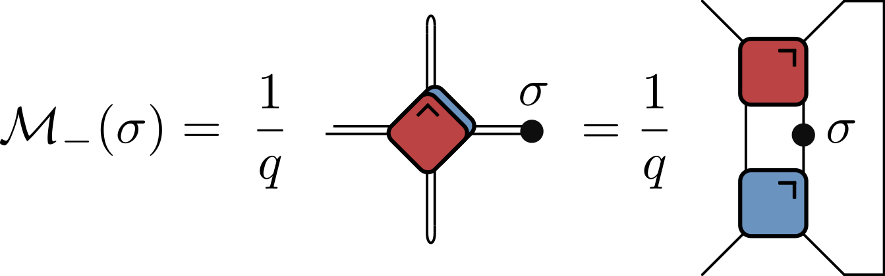
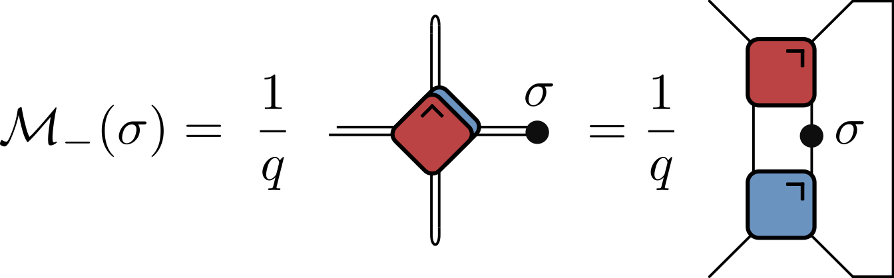

Quantum Circuits I
Circuits as many-body dynamics

austen.uk/slides/quantum-circuits-1-icts for slides
Outline
This lecture
- What is a quantum circuit?
- What are the quantities of interest?
Next lecture
- Some special kinds of circuits
What is a quantum circuit?
A way to describe operations on quantum state, usually consisting of several qubits (spin 1/2 subsystems with Hilbert space \(\mathbb{C}^2\))
Two quantum states \(\ket{0}\) and \(\ket{1}\) define the computational basis.

- \(f\) acts on top five qubits, then \(g\) acts on lower seven
Possible operations

\(H\) (a Hadamard gate) is a single qubit unitary
Also two qubit unitary gates (CNOT here)
Measurements
Why consider circuits?
For this program: example of discrete time, many body dynamics
Model of universal quantum computation
- How to generate an arbitrary quantum state
- One of several options e.g. measurement-based
They exist! Companies (Google, IBM, etc.) have built platforms for gate-based QC
Unitary circuits
(Mostly) concerned with unitary circuits made from unitary gates
Gate is \(n\)-qubit unitary \(U_{s_1\ldots s_n,s'_1,\ldots, s'_n}\)
$$ \sum_{s_1'\ldots s_N'}U_{s_1\ldots s_n,s'_1,\ldots, s'_n} U^\dagger_{s'_1\ldots s'_n,s''_1,\ldots, s''_n}=\delta_{s_1,s_1''}\ldots \delta_{s_N,s_N''} $$
Everything is a tensor
- State of \(N\) qubits expressed in product basis
$$ \ket{\Psi} = \sum_{s_{1:N}\in \{0,1\}^N} \Psi_{s_1\ldots s_N}\ket{s_1}_1\ket{s_2}_2\cdots \ket{s_N}_N $$
Write
$\ket{s_1}_1\ket{s_2}_2\cdots \ket{s_N}_N =\ket{s_1\cdots s_N}=\ket{s_{1:N}}$for brevityOperator on \(N\) qubits has matrix elements
$$ \mathcal{O}_{s_{1:N},s'_{1:N}} = \bra{s_{1:N}}\mathcal{O}\ket{s'_{1:N}} $$
Graphical notation
A tensor is denoted by a blob with one leg for each index
Connecting legs denotes contraction: summing over a shared index

Unitary gates: one qubit
Multiplication by a Pauli matrix: \(X\), \(Y\), or \(Z\).
General case \(U = a_0\mathbb{1} + \mathbf{a}\cdot(X,Y,Z)\) with \(|a_0|^2+|\mathbf{a}|^2=1\)
Other special cases used in quantum information e.g. Hadamard gate
\[ H = \frac{1}{\sqrt{2}}\begin{pmatrix} 1 & 1 \\\\ 1 & -1 \end{pmatrix} \]
Two qubits
Work in basis \(\ket{00}\), \(\ket{01}\), \(\ket{10}\), \(\ket{11}\)
Simplest example is SWAP gate
\[ \operatorname{SWAP}=\begin{pmatrix} 1 & 0 & 0 & 0 \\\ 0 & 0 & 1 & 0 \\\ 0 & 1 & 0 & 0 \\\ 0 & 0 & 0 & 1 \end{pmatrix} \].
\[ \operatorname{SWAP}\ket{10} = \ket{01} \]
- SWAP takes product states to product states
- Slightly more complicated: square root of SWAP
\[ \sqrt{\operatorname{SWAP}}=\begin{pmatrix} 1 & 0 & 0 & 0 \\\ 0 & \frac{1}{2}(1+i) & \frac{1}{2}(1-i) & 0 \\\ 0 & \frac{1}{2}(1-i) & \frac{1}{2}(1+i) & 0 \\\ 0 & 0 & 0 & 1 \end{pmatrix} \]
- This generates entanglement: takes product state to non-product state
\[ \sqrt{\operatorname{SWAP}}\ket{10} = \frac{1}{2}\left[(1+i)\ket{10}+(1-i)\ket{01}\right] \]
\(\sqrt{\operatorname{SWAP}}\) conserves number of 1s and 0s
\(\sqrt{\operatorname{SWAP}}\) together with arbitrary single qubit unitary operators form universal gate set that allows for universal quantum computation
General two qubit unitary
- Any two-qubit unitary \(U\in \mathcal{U(4)}\) can be written
\[ U = e^{i \phi} (u_+ \otimes u_-) V[J_x, J_y, J_z] (v_- \otimes v_+) \]
- \(u_{\pm}, v_{\pm} \in SU(2)\)
\[ \begin{align*} V[J_x, J_y, J_z] &= \exp \left[-i\left(J_x \sigma^x \otimes \sigma^x + J_y \sigma^y \otimes \sigma^y+ J_z \sigma^z \otimes \sigma^z\right)\right]\\\\ &= \begin{bmatrix} e^{-i J_z} \cos(J_-) & 0 & 0 & -i e^{-i J_z \sin(J_-)} \\\\ 0 & e^{iJ_z} \cos(J_+) & -ie^{i J_z} \sin(J_+) & 0 \\\\ 0 & -ie^{i J_z} \sin(J_+) & e^{iJ_z} \cos(J_+) & 0 \\\\ -i e^{-i J_z \sin(J_-)} & 0 & 0 & e^{-i J_z} \cos(J_-) \\\\ \end{bmatrix} \end{align*} \]
- 16 parameters!
Time evolution
Single qubit gates
Time evolution operator \(U=\exp(-iHt)\)
If \(H=\sum_j h_j\) a sum of single qubit terms
\[ \mathcal{U} = \exp(-iHt) = \prod_j \exp(-ih_j) = \prod_j U_j \] \[ U_j=\mathbb{1}\otimes \ldots \otimes\mathbb{1} \otimes \overbrace{u_j}^{j\text{th factor}} \ldots \otimes\mathbb{1} \]
Two qubit gates
- Simplest example of two qubit interaction is exchange Hamiltonian
\[ \begin{align*} h_{12} &= J\left[X\otimes X+Y\otimes Y+Z\otimes Z\right] =J\left[X_1X_2+Y_1Y_2 + Z_1Z_2\right]\\\ &=2\operatorname{SWAP} - 1 \end{align*} \] \[ U(J) = \exp(-ih_{12}) = e^{iJ}\left[\cos (2J) \mathbb{1} - i\sin (2J) \operatorname{SWAP}\right] \]
- Special cases
\[ U(\pi/4)=\operatorname{SWAP} \] \[ U(\pi/8)=\sqrt{\operatorname{SWAP}} \]
- Fully rotationally invariant
- \(H=\sum_{i,j} h_{i,j}\) a sum of two qubit terms with \([h_{i,j},h_{j,k}]\neq 0\)
\(\mathcal{U}\neq \prod_{i,j} \exp(-ih_{i,j})\). More complicated!
Suzuki–Trotter expansion: decompose \(H=H_A + H_B\)
\[ \mathcal{U} = \exp(-iH) = \left[\exp\left(-\frac{iH}{n}\right)\right]^n \sim \left[e^{-iH_A/n} e^{-iH_B/n}\right]^n \]
\[ H = \sum_j h_{j,j+1} \] \[ H_A = \sum_j h_{2j, 2j+1}\qquad H_B = \sum_j h_{2j-1, 2j} \] \[ e^{-iH_A/n}=\prod_j U_{2j,2j+1}\qquad e^{-iH_B/n} = \prod_j U_{2j-1,2j} \]
Floquet theory: kicked Ising model
- Time dependent Hamiltonian with kicks at \(t=0,1,2,\ldots\).
\[ \begin{align*} H_{\text{KIM}}(t) = H_\text{I}[\mathbf{h}] + \sum_{n}\delta(t-n)H_\text{K}\\\ H_\text{I}[\mathbf{h}]=\sum_{j=1}^L\left[J Z_j Z_{j+1} + h_j Z_j\right],\qquad H_\text{K} &= b\sum_{j=1}^L X_j, \end{align*} \]
- “Stroboscopic” form of \(\mathcal{U}(t)=\mathcal{T}\exp\left[-i\int^t H_{\text{KIM}}(t') dt'\right]\)
\[ \begin{aligned} \mathcal{U}(n_+) &= \left[\mathcal{U}(1_+)\right]^n,\qquad U(1_-) = K I_\mathbf{h}\\\ I_\mathbf{h} &= e^{-iH_\text{I}[\mathbf{h}]}, \qquad K = e^{-iH_\text{K}} \end{aligned} \]
KIM as a circuit

\[ \begin{aligned} \mathcal{K} &= \exp\left[-i b X\right]\\\ \mathcal{I} &= \exp\left[-iJ Z_1 Z_2 -i \left(h_1 Z_1 + h_2 Z_2\right)/2\right] \end{aligned} \]
Locality
- Locality a feature of real quantum computing architectures


Computational complexity
State is vector in \(2^N\) dimensional space
Updating involves acting with a unitary matrix
Naive matrix-vector multiplication \(O(\operatorname{dim}^2)=2^{2N}\)
Since gates gives sparse matrices update is \(O(\operatorname{dim})=2^{N}\)
Still exponentially hard in the number of qubits
Quantum supremacy
Difficulty on classical computer basis of “quantum supremacy” based on circuit sampling
Measure empirical distribution of bit strings with fixed initial state
Total number of (time) steps \(T\) taken is depth of the circuit. For low depth \(T<N\) it pays to move horizontally instead
Problem of finding optimal contraction strategy in general is NP-hard
Google’s initial claim of supremacy disputed by supercomputer optimizations, followed by improved tensor network methods: Huang et al. (2020), Gray and Kourtis (2021), Pan and Zhang (2021), Napp et al. (2022)
What are the quantities of interest?
Expectation values
Evaluate \(\bra{\Psi}\mathcal{O}\ket{\Psi}=\bra{\Psi_0}\mathcal{U}^\dagger\mathcal{O}\mathcal{U}\ket{\Psi_0}\) for local operator \(\mathcal{O}\)
Simplest example: \(X\), \(Y\), or \(Z\) for one qubit
\(\mathcal{U}\) is overall unitary operator describing whole circuit
Unitarity in graphical notation
Have to consider both unitaries and conjugates
Introduce color-coded notation

- Condition of unitarity \(U^\dagger U = U U^\dagger = \mathsf{1}\)
\[ \sum\_{\alpha,\beta}U^{\vphantom{\dagger}}_{a,b,\alpha,\beta} U^\dagger\_{\alpha,\beta,c,d}=\delta\_{ac}\delta\_{bd} \]
- Unitarity of two qubit gate expressed as

- Much better!
Using unitarity
- \(\bra{\Psi}\mathcal{O}\ket{\Psi}=\bra{\Psi_0}\mathcal{U}^\dagger\mathcal{O}\mathcal{U}\ket{\Psi_0}\) has diagrammatic representation
- (leave initial state \(\ket{\Psi}\) unspecified for the moment)
“Folded” representations
- Since every \(U\) accompanied by \(U^\dagger\), include both in single unit by “folding” one on top of the other

Lines correspond to two indices, and therefore \(2^2=4\) dimensions
Unitarity condition takes form:

- In folded picture expectation value \(\bra{\Psi}\mathcal{O}\ket{\Psi}\) looks like this
- “Light cone” emerges, reflecting region of circuit that affects expectation value
Reduced density matrix
- Expectation value of operator in region \(A\) can be computed from reduced density matrix \(\rho_A\) for region \(A\) \[ \rho_A = \operatorname{tr}\_{B}\left[\ket{\Psi}\bra{\Psi}\right]=\operatorname{tr}_{B}\left[\mathcal{U}\ket{\Psi_0}\bra{\Psi_0}\mathcal{U}^\dagger\right] \] (\(B\) is complement of \(A\))
- Initial RDM of bottom part of wedge is all that matters!
Quantifying entanglement
RDM quantifies entanglement present in a quantum state describing a system composed of two subsystems A and B
General state is vector \(\in\mathcal{H}=\mathcal{H}\_A\otimes\mathcal{H}\_B\)
Write in terms of basis vectors \(\ket{a}\_A\) and \(\ket{b}\_B\) for A and B subsystems \[ \ket{\Psi}\_{AB} = \sum\_{a=1}^{n\_A}\sum\_{b=1}^{n\_B} \Psi\_{ab}\ket{a}\_A\ket{b}\_B \] \(n\_{A/B}=\operatorname{dim} \mathcal{H}\_{A/B}\)
Now regard \(\psi_{ab}\) as matrix and perform a singular value decomposition
- In new bases our state is
\[ \ket{\Psi}\_{AB} = \sum\_{n=1}^{\min(n_A, n_B)} \sigma\_n \ket{u\_n}\_A\otimes\ket{v\_n}\_B \]
Note single sum, c.f. double sum earlier. This is Schmidt decomposition
\(\sigma_n\) are Schmidt coefficients (singular values of SVD)
If only one nonzero singular value state we have product state, indicating no correlations between subsystems
- Simplest example displaying nontrivial entanglement is Bell state
\[ \left|\Psi^{+}\right\rangle=\frac{1}{\sqrt{2}}\left(|0\rangle_A \otimes|1\rangle_B+|1\rangle_A \otimes|0\rangle_B\right) \]
Schmidt coefficients both \(\frac{1}{\sqrt{2}}\), indicating maximal entanglement
Schmidt decomposition closely related to RDM \[ \rho_A = \operatorname{tr}\_B\left[\ket{\Psi}\bra{\Psi}\right] = \sum\_n \sigma_n^2 \ket{u\_n}\bra{u\_n} \]
Eigenvalues of RDM are \(p_n=\sigma_n^2\)
- One measure of entanglement is von Neumann entropy of \(\rho_A\) (aka entanglement entropy)
\[ S^{(\text{vN})}_A \equiv -\operatorname{tr}\left[\rho_A\log \rho_A\right] \]
- \(S_A\) vanishes for product state, and is otherwise positive
- Rényi entropies provide more complete information \[ S^{(\alpha)}\_A = \frac{1}{1-\alpha}\log \text{tr}\left[\rho^n\right]=\frac{1}{1-\alpha}\sum\_n p\_n^\alpha \] \(S^{(\text{vN})}\_A=\lim\_{\alpha\to 1} S^{(\alpha)}\_A\). \(S^{(0)}\_A\) is number of nonzero Schmidt coefficients (aka Schmidt rank) \[ S^{(2)}\_A = -\log \sum_n p_n^2 = -\log \gamma\tr \rho_A^2 \] where \(\gamma\equiv \tr \rho_A^2\) is purity
Toy model
- Circuit of SWAP gates

- Initial state is product of Bell states \[ \ket{\Phi^+}\_{2n, 2n+1} = \frac{1}{\sqrt{2}}\left[\ket{0}\_{2n}\ket{0}\_{2n+1}+ \ket{1}\_{2n}\ket{1}\_{2n+1}\right] \] \[ \operatorname{tr}\_{2}\left[\ket{\Phi^+}\_{12}\bra{\Phi^+}\_{12}\right] = \frac{1}{2}\mathbb{1}_1 \] with entanglement entropy of one bit
\(\rho_A\) therefore has factor \(\mathbb{1}_n\) for each site \(n\in A\) with “partner” in \(B\)
If both qubits of a Bell pair are at sites \(n,m\in A\) they give a factor \(\ket{\Phi^+}\_{nm}\bra{\Phi^+}\_{nm}\): a pure state
Entanglement entropy has contributions from first case only
\[ S_A = \min(4\lfloor t/2\rfloor, |A|) \text{ bits} \]
\[ S_A = \min(4\lfloor t/2\rfloor, |A|) \text{ bits} \]
- After time \(\sim |A|/2\) subsystem has thermalized.

Ramp behaviour in many systems
In noninteracting systems or integrable systems, often explained in terms of the causal propagation of (quasi-)particles:

Toy model with SWAP gates is rather similar, with qubits playing the role of “noninteracting particles”
This picture remains true in circuits where there is no quasiparticle interpretation (next lecture)
Correlation functions
- Natural correlation function to consider is
\[ c_{\alpha \beta}(x,t) = \frac{1}{2^N}\tr\left[\sigma_{\alpha}(x,t) \sigma_{\beta}(0,0) \right],\qquad \sigma_\alpha(x,t)=\mathcal{U}^\dagger(t)\sigma_\alpha(x)\mathcal{U}(t) \]
Average overall all initial states uniformly
This is “infinite temperature”, although temperature is not defined
Graphical representation
\[ c_{\alpha \beta}(x,t) = \frac{1}{2^N}\tr\left[\sigma_{\alpha}(x,t) \sigma_{\beta}(0,0) \right],\qquad \sigma_\alpha(x,t)=\mathcal{U}^\dagger(t)\sigma_\alpha(x)\mathcal{U}(t) \]

When \(|x|>t\) unitarity condition leads to removal of all \(U\)s and \(U^\dagger\)s \[ c_{\alpha \beta}(x,t) = \frac{1}{4}\tr\left[\sigma_{\alpha}\right]\tr\left[\sigma_{\beta}\right]=0, \] and correlations vanish (if operators are traceless)
Correlations only nonzero inside “light cone”
- When \(|x|=t\) remaining tensor network is particularly simple:
- Rewrite in several ways, including in folded representation:

\(q\) is local Hilbert space dimension (\(q=2\) up to now)
Normalization factor by comparing with \(\sigma_\alpha=\sigma_\beta=\mathsf{1}\) (here \(t=4\))
- Evaluate by iteratively applying operator map \(\mathcal{M}\_+\) or \(\mathcal{M}\_-\)
 

\[ \begin{align*} \langle \sigma\_{\alpha}(t,t) \sigma\_{\beta}(0,0) \rangle &= \tr \left[\sigma\_{\beta}\mathcal{M}\_{-}^t(\sigma\_{\alpha})\right] / q \\\ &= \tr \left[ \sigma\_{\alpha}\mathcal{M}\_{+}^{t}(\sigma\_{\beta})\right] / q \end{align*} \]
\(\mathcal{M}\_\pm\) are examples of quantum channels: completely positive trace preserving maps between spaces of operators
\(\mathcal{M}\_\pm\) have the additional property of being unital: \(\mathcal{M}\_\pm(\mathsf{1})=\mathsf{1}\)
Typical behaviour of correlations
- Can evaluate correlation inside light cone
“One step inside” involves quantum channel acting on two-site operators: a space of dimension \(q^4\).
Taking \(s\) steps inside channel acting on \(q^{2s}\)-dimensional space
General situation is really exponentially hard, as we’d expect
Operator spreading
How does a local operator “look” as it evolves in Heisenberg picture?
\(Z_n(t)=\mathcal{U}^\dagger(t)Z_n \mathcal{U}(t)\) appears in \(\langle Z_n(t)Z_m(0) \rangle\), but this is only one “component” of \(Z_n(t)\)
Any observable such as \(Z_n(t)\) can be expressed as expansion \[ Z_n(t)= \sum_{\mu_{1:N}=\\{1,x,y,z\\}^N} \mathcal{C}\_{\mu_{1:N}}(t) \sigma_1^{\mu_1}\otimes\cdots \sigma_N^{\mu_N} \] \[ \mathcal{C}\_{\mu_{1:N}}(0)=\begin{cases} 1 & \mu_j=z, \mu_k=1,\forall k\neq j \\\\ 0 & \text{otherwise} \end{cases} \]
\[ Z_n(t)= \sum_{\mu_{1:N}=\\{1,x,y,z\\}^N} \mathcal{C}\_{\mu_{1:N}}(t) \sigma_1^{\mu_1}\otimes\cdots \sigma_N^{\mu_N} \]
- Since \(\tr\left[\sigma_\alpha\sigma_\beta\right]=2\delta_{\alpha\beta}\), can extract spin correlations from \(\langle Z_j(t)Z_k(0)\rangle=C_{jk}(t) \equiv \mathcal{C}_{1\cdots \mu_k=z \cdots 1}(t)\)

- This represents only one component of operator expansion
Operator norm \(\tr\left[Z\_n^2(t)\right]=2\) is conserved under time evolution
This implies the normalization
\[ \sum_{\mu_{1:N}=\\{1,x,y,z\\}^N} \mathcal{C}^2\_{\mu_{1:N}}(t) = \frac{1}{2^{N-1}}. \]
Example: \(SU(2)\) preserving gate
Consider gate generated by exchange Hamiltonian: \[ U\_{j,j+1} = \cos\theta \mathbb{1}\_{j,j+1} + i\sin\theta \operatorname{\mathsf{S}}\_{j.j+1} \] \(\operatorname{\mathsf{S}}_{j,j+1}\) denotes \(\operatorname{\mathsf{SWAP}}\) gate on sites \(j\) and \(j+1\)
Action of this gate on an operator is
\[ \mathcal{O} \longrightarrow U^\dagger\_{j,j+1}\mathcal{O}U\_{j,j+1} = \cos^2\theta \mathcal{O} + \sin^2\theta \operatorname{\mathsf{S}}\_{j.j+1}\mathcal{O} \operatorname{\mathsf{S}}\_{j.j+1} \\\ -i\sin\theta\cos\theta \left[\operatorname{\mathsf{S}}\_{j.j+1}, \mathcal{O}\right] \]
Ensemble of circuits
Consider ensemble averaged quantities
Take \(\theta=\pm \theta_0\) with \(p(\theta_0)-p(-\theta_0)\equiv \delta > 0\).
Averaging the evolved operator gives
\[ \overline{U^\dagger_{j,j+1}\mathcal{O}U_{j,j+1}} = \cos^2\theta_0 \\, \mathcal{O} + \sin^2\theta_0 \\, \mathsf{S}\_{j.j+1}\mathcal{O} \mathsf{S}\_{j.j+1} \\\\ +i\delta \sin\theta_0\cos\theta_0 \left[\mathsf{S}\_{j.j+1}, \mathcal{O}\right] \]
Interpretation
- Operators on sites \(j\) and \(j+1\) switch with probability \(\sin^2\theta_0\).
- The asymmetry \(\delta\) governs strength of “quantum” dynamics
- Continuous time limit (Claeys, Lamacraft & Herzog-Arbeitman (2022) \[ \frac{d\bar{\mathcal{O}}}{dt} = \sum_j \left[iJ \left[\mathsf{S}\_{j,j+1},\bar{\mathcal{O}}\right]+\left(\mathsf{S}\_{j,j+1}\bar{\mathcal{O}}\mathsf{S}\_{j,j+1}-\bar{\mathcal{O}}\right)\right] \] where \(J\propto \delta\). Computing commutator:
\[ \begin{align*} i[\mathsf{S},\sigma^a\otimes 1]&=-\epsilon^{abc}\sigma^b\otimes\sigma^c\nonumber\\\\ i[\mathsf{S},1\otimes \sigma^a]&=\epsilon^{abc}\sigma^b\otimes\sigma^c\nonumber\\\\ i[\mathsf{S},\sigma^a\otimes \sigma^b]&=\epsilon^{abc}\left(\sigma^c\otimes 1- 1\otimes \sigma^c\right). \end{align*} \]
- Describes operator “splitting” (\(1\to 2\)) and “merging” (\(2\to 1\))
\(J=0\) limit
\[ \frac{d\bar{\mathcal{O}}}{dt} = \sum_j \left[iJ \left[\mathsf{S}\_{j,j+1},\bar{\mathcal{O}}\right]+\left(\mathsf{S}_{j,j+1}\bar{\mathcal{O}}\mathsf{S}\_{j,j+1}-\bar{\mathcal{O}}\right)\right] \]
No splitting and merging and terms
In single operator sector define \(\mathcal{C}^a_{0\cdots \mu_k=a\cdots 0}\equiv C^a_k\) \[ \partial_t C^a_k = C^a_{k+1} + C^a_{k-1} - 2 C^a_k\equiv \Delta_k C^a_k, \] diffusion of single \(\sigma^a\) (\(\Delta_k\) is 1D discrete Laplacian)
\(J\neq 0\)
\[ \partial_t \mathcal{C}\_{\mu_{1:N}} = \sum_j \left[J\epsilon_{\alpha\beta \mu_j \mu_{j+1}} \mathcal{C}\_{\mu_1\cdots \alpha\beta \cdots \mu_N} + \mathcal{C}\_{\mu_1\cdots \mu_{j+1}\mu_j \cdots \mu_N} - \mathcal{C}\_{\mu_1\cdots \mu_{j}\mu_{j+1} \cdots \mu_N}\right] \]
- First term leads to single site operator spreading over many sites

- Qualitative behaviour is known as operator spreading and is a generic feature of operator dynamics
Spreading suppressed at \(J=0\) because we considered average
In any sample from our random circuit, single-site operator spreads to many sites
Random signs of coeffcients \(\mathcal{C}\_{\mu_{1:N}}\) means most average to zero: only the single site contributions remain
When \(J\neq 0\) some contribution survives and this allows for a controlled expansion
We’d like a measure that is insensitive to these random signs